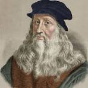
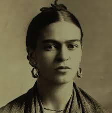
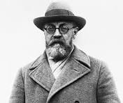
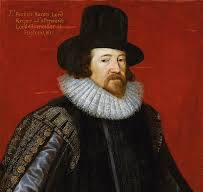

অন্তরিক স্বাগতম
শিল্প মানব সৃজনশীলতার, দক্ষতার এবং কল্পনার প্রকাশ। এটি সীমা অতিক্রম করে, আবেগকে উদ্দীপিত করে এবং মানবতার মূল সত্তাকে জীবন্ত করে তোলে। চিত্রকলার মাধ্যমে আমরা পৃথিবীর সৌন্দর্য এবং আত্মার গভীরতাকে ধারণ করি। প্রতিটি তুলি একেকটি গল্প, প্রতিটি রং একেকটি সুর, এবং প্রতিটি চিত্রকর্ম শিল্পীর হৃদয়ে প্রবেশের একটি যাত্রা।
প্রখ্যাত শিল্পীদের কাছ থেকে অনুপ্রেরণা

"চিত্রকলা হলো এমন এক কবিতা যা দেখা যায় অনুভূত হয় না, এবং কবিতা হলো এমন এক চিত্রকলা যা অনুভূত হয় দেখা যায় না।" - লিওনার্দো দা ভিঞ্চি
"শিল্প জীবনের প্রতিদিনের ধুলো মুছে দেয় আত্মা থেকে।" - পাবলো পিকাসো

"আমি কখনো স্বপ্ন বা দুঃস্বপ্ন আঁকি না। আমি আমার নিজস্ব বাস্তবতা আঁকি।" - ফ্রিদা কাহলো

"সৃজনশীলতার জন্য সাহসের প্রয়োজন।" - আঁরি মাতিস

"শিল্পীর কাজ সবসময় রহস্যকে আরও গভীর করা।" - ফ্রান্সিস বেকন